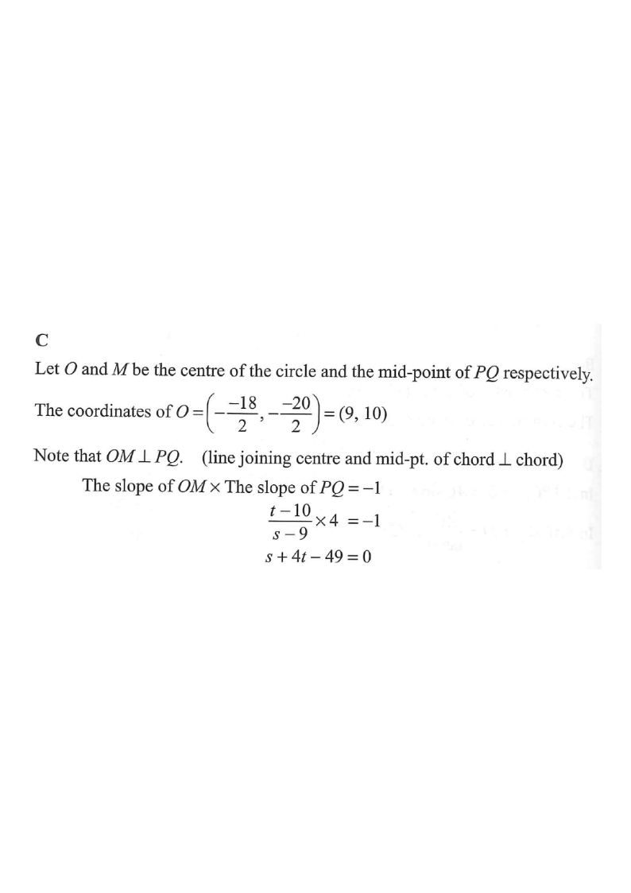

Coordinate Geometry — Mid-point of a chord of a circle
The slope of the straight line \(L\) is \(4\). It is given that \(L\) and the circle \(x^2+y^2-18x-20y+96=0\) intersect at the points \(P\) and \(Q\). If the coordinates of the mid-point of \(PQ\) are \((s,t)\), which of the following must be true?
Answer: C

Rewrite the circle equation in centre–radius form so we know the centre \(O\) and radius \(r\).
Complete the square in \(x\) and in \(y\):
\[x^2-18x+y^2-20y+96=0\] \[(x^2-18x+9^2)+(y^2-20y+10^2)+96=9^2+10^2\] \[(x-9)^2+(y-10)^2=81+100-96\]Compare with \((x-h)^2+(y-k)^2=r^2\):
\[h=9,\qquad k=10,\qquad r^2=85\]Since \(M\) is the mid-point of the chord \(PQ\), the line \(OM\) (joining the centre to the mid-point of a chord) is perpendicular to the chord \(PQ\).
Let \(M=(s,t)\). Since \(PQ\) has slope \(4\), and \(OM \perp PQ\):
\[\text{slope of }OM \times \text{slope of }PQ = -1\] \[\frac{t-10}{s-9}\times 4=-1\]Expand and rearrange:
\[4t-40=-s+9\] \[s+4t-49=0\]Substitute a general line of slope \(4\) into the circle and use the mid-point of the roots to confirm the result.
Let \(L\) be \(y=4x+c\). Substitute into \(x^2+y^2-18x-20y+96=0\):
\[x^2+(4x+c)^2-18x-20(4x+c)+96=0\] \[17x^2+(8c-98)x+(c^2-20c+96)=0\]The \(x\)-coordinate of the mid-point is the average of the roots:
\[s=\frac{x_P+x_Q}{2}=\frac{-\,(8c-98)}{2\cdot 17}=\frac{98-8c}{34}=\frac{49-4c}{17}\]And substituting \(y=4x+c\):
\[t=4s+c=\frac{4(49-4c)}{17}+c=\frac{196-16c+17c}{17}=\frac{196+c}{17}\]Substitute \(c\) into \(t\):
\[t=\frac{196+c}{17}=\frac{196+\frac{49-17s}{4}}{17}=\frac{784+49-17s}{68}=\frac{833-17s}{68}\] \[68t=833-17s\] \[s+4t=49\]